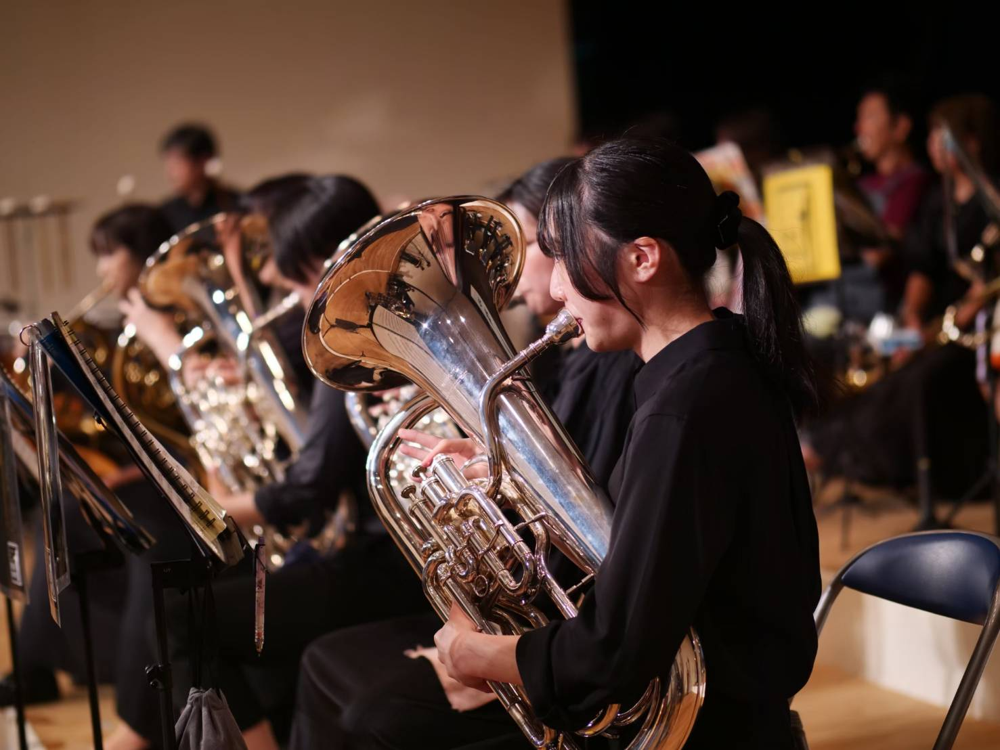
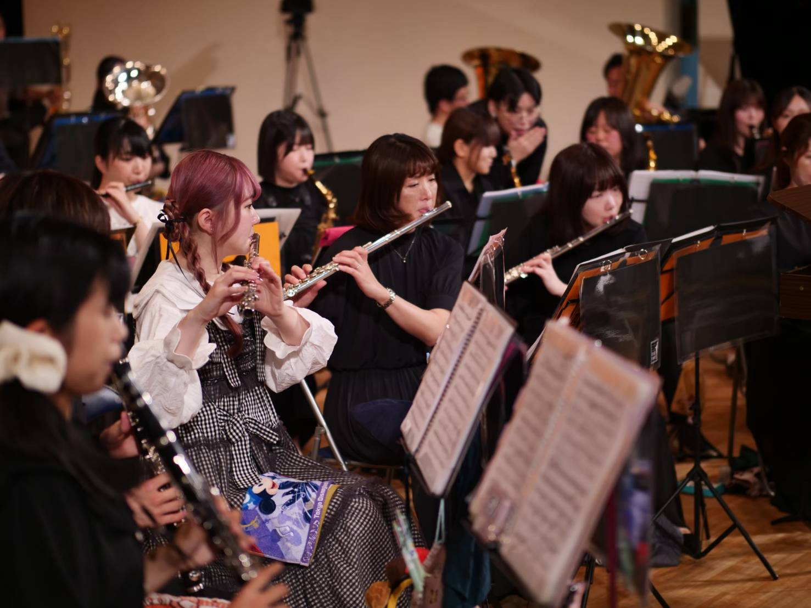
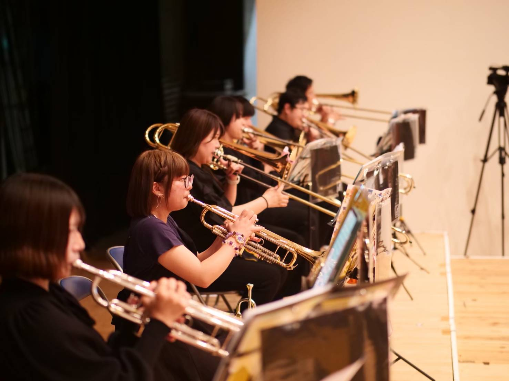
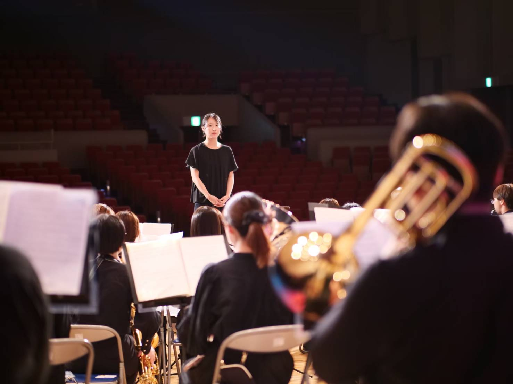
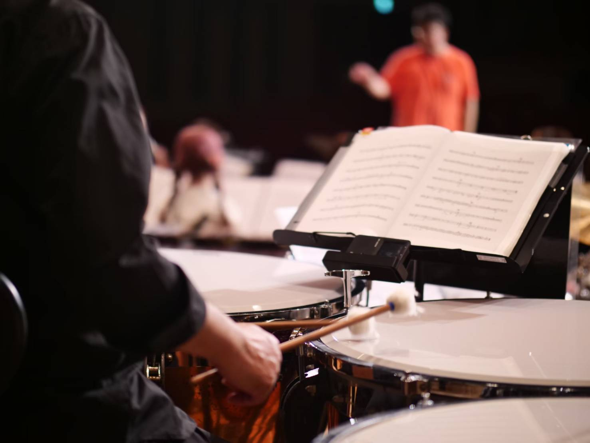
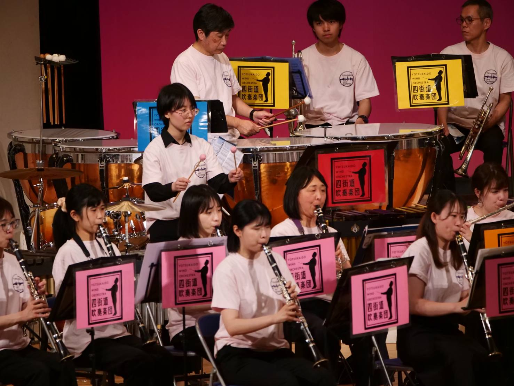
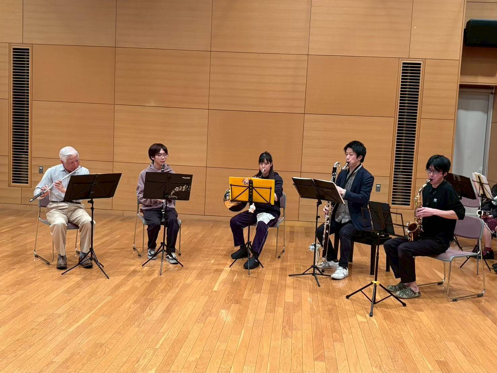

2026.11.08
消防フェスティバル四街道2026
- 日時
- 2026年11月8日（日）
12:45〜13:10 - 会場
- 四街道市立中央小学校 校庭
演奏曲は「アンパンマンマーチ」「YOASOBIメドレー」ほか。雨天中止です。
千葉県四街道市を拠点に活動する吹奏楽団。通称「よつすい」！
音を重ねて、四街道の街を彩る。
吹奏楽を通じて人と地域をつなぎ、仲間とともに成長できる場所がここにあります。







四街道吹奏楽団は、2018年4月、千葉県四街道市で学生と社会人によって結成された一般吹奏楽団です。 地域に根ざした吹奏楽団として、四街道の音楽文化の普及を目指して活動しています。
「よつすい」の愛称で親しまれ、地域イベントへの出演のほか、福祉施設でのボランティア演奏、 千葉県吹奏楽コンクールへの参加、定期演奏会やウィンターコンサートの開催、 YouTubeでの動画配信など、音楽を通してさまざまな活動に取り組んでいます。
世代もきっかけもさまざまな団員が集まる、和気あいあいとした仲良しな楽団です。
公民館祭り、消防フェスティバル、福祉施設での演奏など、地域のみなさまの身近な場所へ楽器を持って出かけます。音楽が暮らしのなかにある街をつくりたいと考えています。
高校生から社会人まで、幅広い世代が同じ譜面台を囲みます。合奏が終わればおしゃべりも弾む、気取らない雰囲気が「よつすい」らしさです。
常任指揮者のもとで基礎から音づくりを積み上げ、コンクールや演奏会という目標に向かって練習します。楽しさと向上心、どちらも手放しません。
Kaise Eiji ／ 四街道吹奏楽団 常任指揮者
1989年、千葉県生まれ。県立八千代高等学校卒業。2012年に東京音楽大学 器楽専攻（ユーフォニアム）を卒業後、 同大学の指揮聴講生として2年間在籍。ユーフォニアムを牛渡克之、山本孝の両氏に師事。 トーマス・リューディ、デマンドレ・サーマンの両氏のレッスンを受講。指揮を時任康文、曽我大介の両氏に師事。
さいたま市主催の「マンガチック音楽会」では2012年から毎年指揮を務め、好評を博している。 2011年から2017年まで千葉県立四街道高等学校吹奏楽部の外部講師を務め、 全日本吹奏楽コンクール東関東大会に3度出場。2016年には金賞（4位）を受賞。
現在はオーケストラや吹奏楽の指揮・指導など幅広く活動するかたわら、後進の育成にも力を注いでいる。 伊藤楽器 北習志野店・松戸店のユーフォニアム講師。
入場無料の公演が中心です。どなたでもお気軽にお越しください。
演奏曲は「アンパンマンマーチ」「YOASOBIメドレー」ほか。雨天中止です。
テーマは「昭和100年を振り返る紅白歌合戦」。整理券は11月28日（土）12時より電子チケット「teket」にて配付します。

団員が少人数のグループに分かれて演奏する、年に一度の発表会です。
練習は週1回、土曜日または日曜日。見学はいつでも歓迎です。
| 練習日 |
週1回（土曜日または日曜日） 第3日曜日 17:00〜21:00（定例） 第4土曜日 17:00〜21:00（定例） 第1週・第2週は前月に日時と場所が決まります |
|---|---|
| 練習場所 |
四街道公民館 1Fホール 南部総合福祉センター わろうべの里「わろうびんぐホール」 四街道市立旭公民館（ホールまたは大会議室） |
これまでの歩みと、コンクールの結果をご紹介します。
第4回 定期演奏会（5月）
千葉県吹奏楽コンクール A部門 銅賞
指揮：貝瀬永治／課題曲 Ⅱ ザ・ガーズ（星出尚志）／自由曲 ヒロイック・サガ〈英雄的伝説〉（ジェイガー）
ウインターコンサート2026（12月・予定）
第3回 定期演奏会（5月25日）／ウインターコンサート2025（12月21日）
第2回 定期演奏会（5月25日）／ウインターコンサート2024（12月15日）
四街道吹奏楽団は、一緒に楽しく演奏する仲間を募集しています。練習は週1回、土曜日または日曜日です。
見学は随時受け付けていますので、悩む前にまずは一度のぞきにきてください。
| 急募 | バスクラリネット／テナーサックス／ホルン／チューバ |
|---|---|
| 募集強化中 | パーカッション |
| 募集中 | クラリネット／バリトンサックス／トロンボーン／ユーフォニアム |
| 要相談 | ファゴット／コントラバス |
特に四街道市民の方、急募・募集強化中のパートは大歓迎です。
「要相談」の楽器についてはお問い合わせください。
公式YouTubeチャンネルで、演奏会やコンサートの演奏を公開しています。
気に入っていただけたら、チャンネル登録と高評価をお願いします。
練習の様子や本番の裏話、団員のつぶやきなど、よつすいの「ふだん」をお届けしています。
← 横にスクロールすると過去の記事が読めます →
記事を読み込んでいます…
見学・体験のお申し込み、演奏のご依頼、取材のご相談など、下のフォームからお気軽にご連絡ください。 送信後、担当者より3日以内を目途に折り返しご返信いたします。
練習の見学は随時受付。楽器をお持ちでなくても、聴くだけの見学で構いません。
地域のイベント、福祉施設、学校行事などでの演奏をご相談いただけます。
取材のご依頼、相互リンクのご希望等のご質問もこちらから。
個人情報の取り扱いについて
ご記入いただいた内容は、お問い合わせへの回答と当団からのご連絡のみに使用し、
ご本人の同意なく第三者に提供することはありません。